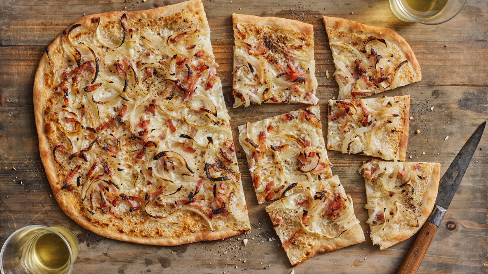

Tarte flambée is a thin, crispy, rectangular baked dough that is topped with tart and spreadable cheese (fromage blanc) or melting ripe cheese (Munster), créme fraîche, crispy bacon, and thinly sliced roasted onions. Tarte flambée pairs perfectly with dry white wines and foamy local beers, both of them specialties of the Alsace region.
Meal prep time : 45 minutes
Servings : 2-4